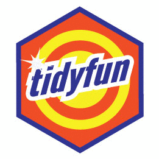
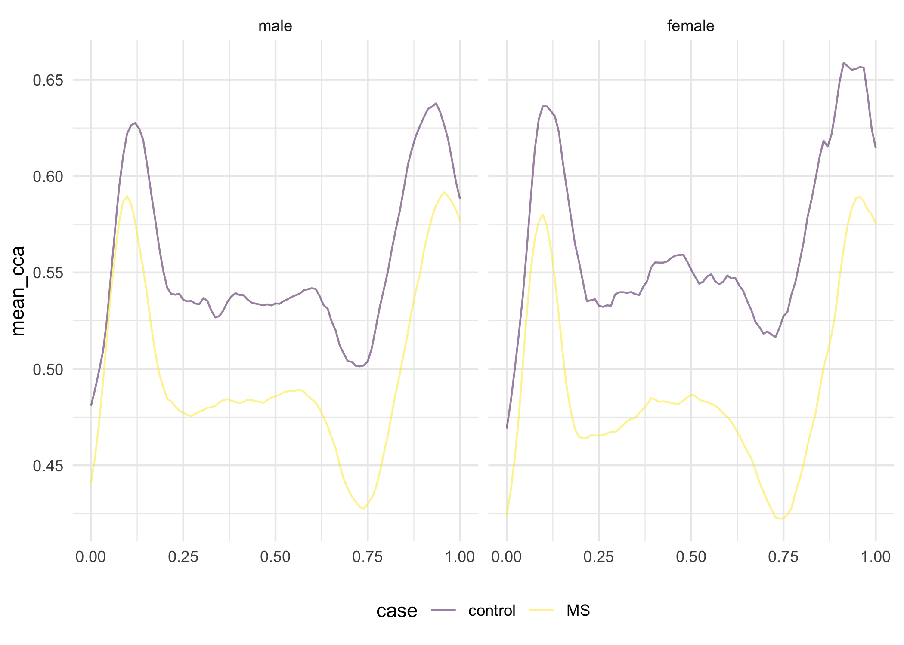

tidyfun 
The goal of tidyfun is to provide accessible and well-documented software that makes functional data analysis in R easy – specifically data wrangling and exploratory analysis. This is achieved by introducing a new data type (tf). Vectors of class tf can be operated on using many standard functions (+, mean, etc.) as well as several new functions in tidyfun (tf_smooth, tf_where).
Crucially, vectors of class tf can be included in data frames containing other variables, enabling data manipulation using tidyverse tools. This approach is connected to the conceptual framework in functional data analysis, which assumes that complete functions are the unit of observation; with tidyfun, full curves sit alongside numeric, factor, and other observations on the same subject.
Installation
tidyfun is currently not on CRAN. You can install the development version from GitHub with:
# install.packages("pak")
pak::pak("tidyfun/tidyfun")Overview
tidyfun provides:
- new data types for representing functional data:
tfd&tfb - arithmetic operators and descriptive statistics for such data
-
tidyverse-verbs for handling functional data – especially inside data frames - new graphics functions for
tfvectors and tidy functional data frames
For detailed information on the features of tidyfun, check out articles on the following topics:
-
Representing functional data as
tfvectors, and operating on those vectors - Converting non-tidy functional data (matrices, “long” and “wide” data frames) to tidy functional data
-
Wrangling data frames that include functional data using
tidyverseandtidyfuntools - Visualizing tidy functional data
The result is a package that enables exploratory data analysis like the following, which computes group-specific mean curves in the dti_df dataset, and plots the result:
library("tidyfun")
data(dti_df, package = "tidyfun")
dti_df |>
group_by(case, sex) |>
summarize(mean_cca = mean(cca, na.rm = TRUE)) |>
ggplot(aes(y = mean_cca, color = case)) +
geom_spaghetti(size = 2) +
facet_grid(~sex)
What does it do?
New vector-like data types for functional data
tidyfun introduces new S3-classes for functional data, either as raw data (class tfd for tidy functional data) or in basis representation (class tfb for tidy functional basis data), defined in the underlying {tf} package.
Such tf-objects can be subsetted or subassigned, computed on and summarized.
Almost all
- operators like
==,+or* - math functions like
sum,logorabs - and statistics functions like
meanorsd
are defined for tidyfun’s data structures (more).
The tf objects are basically glorified lists, so they work well as columns in data frames. That makes it a lot easier to keep your other data and functional measurements together in one object for preprocessing, exploratory analysis and description. At the same time, these objects actually behave like vectors of functions to some extent, i.e., they can be evaluated on any point in their domain, they can be integrated or differentiated, etc.
See here for more information on the operations defined for tf vectors.
Methods for converting existing data to tf
tidyfun includes functions tfd and tfb for converting matrices, data frames, etc. to tf vectors. It also provides tf_gather & tf_nest in order to reshape tables with functional data, by going from wide to narrow or from long to short; functions like as.matrix, tf_spread & tf_unnest can reverse these data conversions.
See here details on getting data into (and out of) the tf format.
tidyverse verbs for dealing with functional data inside data frames
All dplyr verbs work on tf-columns, so you can filter, mutate, group_by & summarize, etc., functional data pretty much like conventional “tidy” data. tidyfun adds several functions that are useful in conjunction with these, like tf_anywhere and tf_smooth.
See here to see how you can wrangle functional data.
New ggplot2 geoms and stats for functional data
tidyfun defines pasta-themed geoms for functional data:
-
geom_spaghettifor lines, -
geom_meatballsfor (lines &) points, -
gglasagnafor lasagna plots, with anorder-aesthetic to sort the lasagna layers, -
geom_capellinifor glyphs plots (i.e., sparklines),
{kind=link}
{kind=link}
as well as new methods for base R graphics functions plot, lines and points for quick and easy visualizations of functional data.
See here for the documentation of the visualization approaches or take a look at the Visualization vignette.
Found a bug? Got a question? Missing some functionality?
Please let us know so we can make it better.